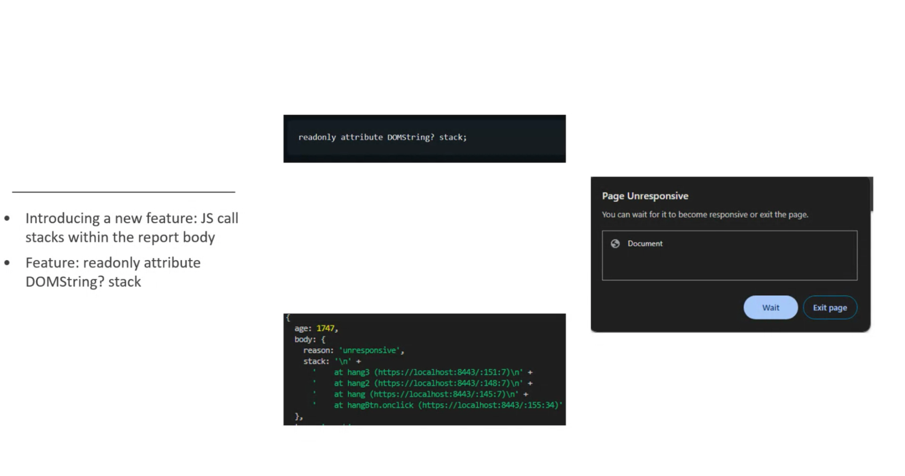
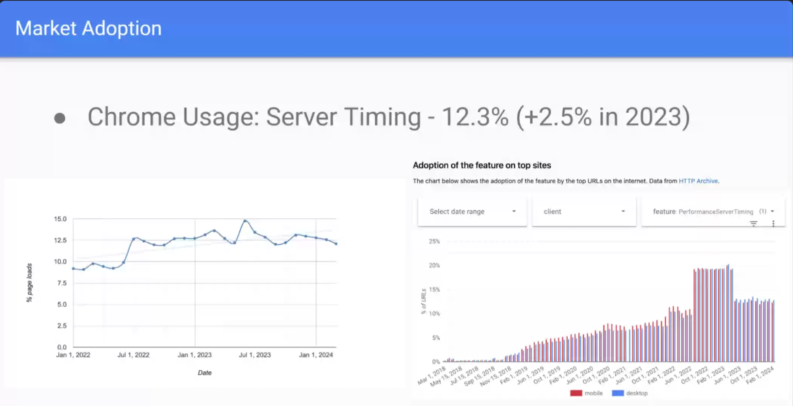
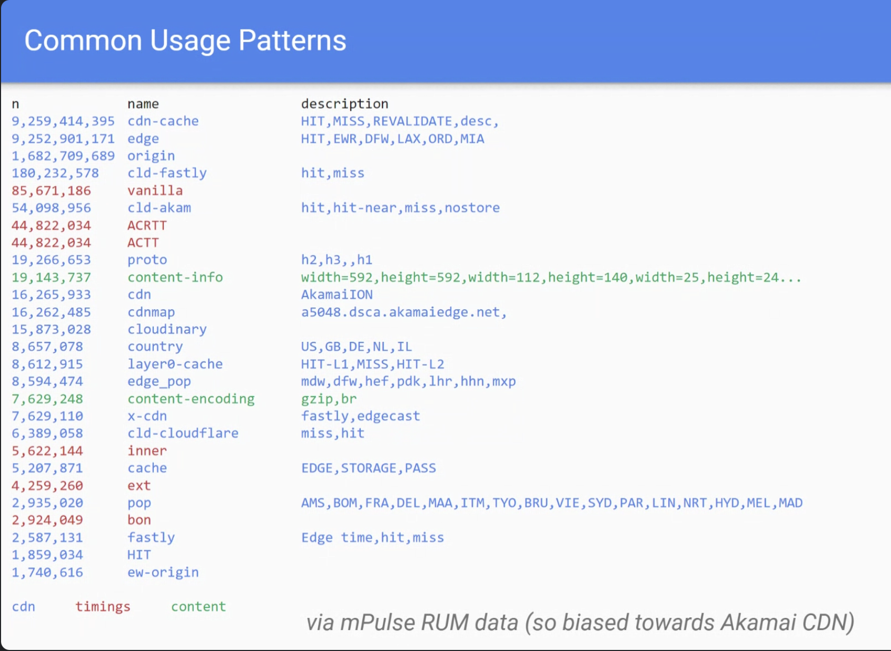

Participants
- Nic Jansma, Yoav Weiss, Andy Luhrs, Noam Helfman, Issack John, Andy Davies, Seth Brenith, Chongwoo Han, Carine Bournez, Noam Rosenthal, Sulekha Kulkarni, Mike Henniger, Benjamin De Kosnik, Sia Karamalegos, Luis Fernando Pardo Sixtos, Barry Pollard, Marcel Duran, Aoyuan Zuo, Sean Feng
Admin
- Next meeting: March 28, 2024 @ 11am EDT / 8am PDT
- LoAF FPWD
- Created a repo
- Linkable from other specs
- Next steps: FPWD
Minutes
Crash report call stacks - Andy Luhrs
Issack: Call stacks from unresponsive pages. That’s a common challenge
… Stems from JS running heavy computations and making it hard to pinpoint the cause
… looking at crash reporting - it indicates that the user was unable to use the page, but has limitations in providing detailed information
 height: 328.00px; margin-left: 0.00px; margin-top: 0.00px; transform: rotate(0.00rad) translateZ(0px); -webkit-transform: rotate(0.00rad) translateZ(0px);" title="">
… To overcome this issue of not having enough information, we’ve added to add details
… When the user is presented with the “wait” bit the report was already sent
… Document policy would enable developers to opt-in
- Yoav: Have you inquired with privacy + security folks to see about the feasibility of including call stacks?
- ... We've done similar reviews error reports and with JS Profiling etc
- Issack: Been working with folks from Google on this. Talked to Ian Clelland who discussed the implications here
- … New mechanism that allows sites to collect data, but browsers already have such mechanisms
- … Made it opt-in by the developer. Also disabled when reporting is disabled
- Seth: talked to privacy folks. We consider it low risk because of JS exceptions, as long as we’re bound by cross-origin policy (e.g. not including scripts that weren’t loaded through CORS)
- Marcel: Would that stack contain trace from extensions therefore exposing which extensions the user might have?
- Issack: Want to restrict this to the main world, so not extension scripts
- Seth: If extension scripts inject scripts into the main world that would show up here, but extensions running in their own world wouldn’t
- Sia: What if the extension script is the cause of the crash?
- Seth: Would show if in the main world. Something that developers would want to know, but we need to ensure we don’t leak privacy in telling them that.
- … May be able to report the information to extensions, but we haven’t considered that
- Sia: So it won’t be reported?
- Seth: My understanding is that some cases of extensions be caught by this, if their code is in the main world.
- Nic: If an extension injected code on the site and then it got executed, would the stack trace include the chrome extension protocol?
- Seth: If we implemented this naively, they would. We may want to filter those out.
- Noam: You would see them. If it’s in the main world, which is not the default, its code is observable to the website, so it’s OK to observe it in this case. Not an issue.
- Barry: Reporting API has crash reports, but without stack trace. Was this discussed when it was added?
- Yoav: Ian would know, but he's not here today
- Barry: Can go through the issues (open and closed) with "crash" in them in the reporting API github repo.
- Yoav: Given this is an API that we're expecting to fire when the user is already seeing a dialog, is it worthwhile to add more details
- ... Most APIs don't have a clear point where the user can report more data to make the job easier. This one does, so we can consider it.
- Nic: Even a free form field for user reports can be valuable
- … Next steps? Is it being experimented with?
- Issack: Still working on the implementation
- Andy: Will be worked on in the crash reporting repo
- Nic: API allows you to emit headers and read them from JS
- … Folks used it to surface different metrics
- … Last published a year ago. Editors haven’t been active
- … new editors needed!!
- …  height: 320.00px; margin-left: 0.00px; margin-top: 0.00px; transform: rotate(0.00rad) translateZ(0px); -webkit-transform: rotate(0.00rad) translateZ(0px);" title="">
- … Generally increasing usage
- … ~270K results on search engines
- … Sampling the writing shows a positive developer sentiment
- …  height: 456.00px; margin-left: 0.00px; margin-top: 0.00px; transform: rotate(0.00rad) translateZ(0px); -webkit-transform: rotate(0.00rad) translateZ(0px);" title="">
- … Tried to color code into types of data
- … blue is CDN-specific- PoP, cache status, etc
- … reds seem to be measurements with durations
- … greens relate to the content itself - e.g. someone emitting server timing with content encoding in it, as a work around for us not exposing this info otherwise
- … Most of the issues are old. One recent bug from Andy Davis on null durations
- … Not a lot of contention in these issues - seems like a relatively understood and useful spec
- … With that said, we need editors to continue working on this spec. Previous editors moved on
- … There’s an opportunity here for companies that are using this data
- … Second topic came from a discussion on the webperf slack on naming conventions
- … Cliff Crocker surveyed values that CDNs are using.
- … Is there an opportunity for us here to make sure that different CDN use the same names to mean the same thing.
- … Akamai published its headers and we’re getting value out of it
- … Went down this path with user timing where we had conventions, dropped them and now trying to bring them back in
- … Would love to hear thoughts on that!
- Yoav: Point on slack related to cache semantics, RFC 9211 cache-status, has similar semantics to what people are doing in server-timing
- ... Want to expose to infrastructure
- ... One path would be to define those in ServerTiming
- ... Other would be to expose cache-status similar to ST
- ... Worthwhile to discuss trade-offs
- ... Header is already in IETF as a RFC, set in stone
- ... Don't know we seriously discussed exposing at any point
- Nic: Some of things that would be easy to standardize are other than cache status, although it’s an important one
- … Challenge that for timing, the timing semantics would differ between different CDNs. But would be a good discussion to have
- Noam: Found it strange in ServerTiming that the browser doesn’t have anything with defining the semantics. It’s a side channel
- … I’m asking myself if the browser is the right place for this discussion
- … People are abusing ServerTiming for passing the header value to JS
- … HTMX folks are looking into this as a way to pass random headers
- … Not really abuse, but abuse of the name “Server timing”
- … Maybe we need an opt-in to expose some headers to script, similar to how we can do that for fetch. That would separate the semantics from browser space.
- Andy: If we did that, would we do it at the navigation level or at the resource level.
- Yoav: To maintain same functionality, it’d be at the resource level
- Noam: We have access to CORS headers in Service Workers.
- Nic: We are seeing a lot of different use cases.
- Yoav: and everything in blue is non-timing. Maybe we shouldn’t have called it timing
- Nic: Andy - would you find it useful to have better semantics?
- Andy: yes. Having a defined dictionary makes it easier for less-technical people to consume data from their CDN
- … We’d love that
- Nic: So we can try to get the right people in the room
- Andy: Cliff said he’s willing to be an editor
- Yoav: Let's say we have an exposedHeaders header, that would be on RT entries in a webcompat way, then we could have CDNs use cache-status header, and .exposedHeaders[Cache-Status] could be gathered.
- ... There may be other IETF semantic headers be defined in HTTP working group, a there would be a mechanism where we could expose them directly. Translate structured field data into headers that can be read on the RT entry
- ... Then we can try to nudge people to move towards keeping the timing semantics in ST, moving non-timing semantics elsewhere (cache-status, etc)
- ... Would require editor bandwidth
- ... People can sign-up to affect change rather than maintenance
Proposal: add timestamp for when "activation" or "dismissal" starts
- Noam: This is about a blind spot in Navigation Timing where after we receive the final response for the document, there are a few things that happen and then we start the activation
- … Relevant when we have view transitions, as all kinds of things are happening between the response start and page hide, and currently there’s no way to tell what’s going on in between
- … At the same time, it’s not necessarily important. E.g. only relevant when there are long pagehide event handlers (affects INP for the previous page)
- … Was raised when started work view transitions
- Nic: When is the entry available?
- Noam: The navigation entry is always available but queued on load
- … It’s an extension of unload event start and end, for a previous navigation on the same origin
- … Seemed like a more important thing when we opened the issue than currently
- … Wanted to gather feedback on it
- Nic: If we had these timers we would get the time that the browser is spending doing transitions, as well as time the site is wasting (e.g. capturing too many elements to transition)
- Yoav: Is this something you think would impact the landing of View Transitions? if there is no way to measure it?
- Noam: Not a blocker, as people can measure it themselves. More of a convenience and discoverability of time spent. Could pop up at dashboard
- Andy: Trying to think about this. Used to be a common issue when folks would hijack the beforeunload event in unmeasurable ways. But maybe user timing is good enough here
- Yoav: Given this a timestamp is for the previous page, we'd need need to serialize or sync this state for the next page to pick it up. It's possible to do this, but sensitive.
- Noam: An alternative is to have a more convenient way to pass documents cross-navigaitons when same-origin navigations.
- Yoav: Big lift
- ... Next steps is for RUM vendors to talk to their customers / consumers and see if this is impacting folks that are trying to measure view-transitions
- ... Report back
- Noam: Good that people are aware this exists. So when it arises we'll be prepared to talk about it.